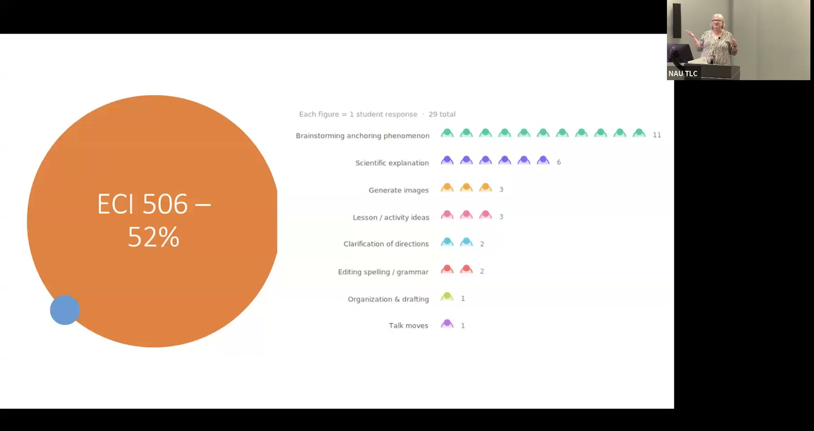

AI-Assisted Lesson Planning in Elementary Science Teacher Preparation
Exploring how pre-service teachers use Copilot to generate science talk questions and lesson components.
Presented by Marti Canipe, Associate Professor of Elementary Science Education, NAU Department of Teaching and Learning
About This Project
Generating high-quality "science talk questions" — open-ended prompts that elicit student reasoning rather than rote answers — is one of the most cognitively demanding tasks for novice teachers. Pre-service teachers in elementary science education courses must develop the professional judgment to construct questions that connect to specific grade levels, anchoring phenomena, and content standards. This project investigated how generative AI tools, specifically Microsoft Copilot, could support this and other lesson planning tasks in two science methods courses: ECI 406 (undergraduate, in-person, 16 weeks) and ECI 506 (graduate, asynchronous online, 7.5 weeks).
Approximately 58% of undergraduates and 52% of graduate students chose to use AI at some point during the courses, but patterns of use differed. Undergraduates tended to use AI for grammar correction and generating initial ideas; graduate students more often used it for brainstorming anchoring phenomena and refining lesson structures. Across both cohorts, students showed mixed attitudes: roughly half preferred to develop ideas independently, expressing concern that AI use might shortcut the creative process they valued. Canipe's ongoing research focuses on identifying which specific lesson planning tasks benefit most from AI assistance and developing clearer pedagogical frameworks for when and how to integrate generative AI in teacher preparation.
Project Highlights

